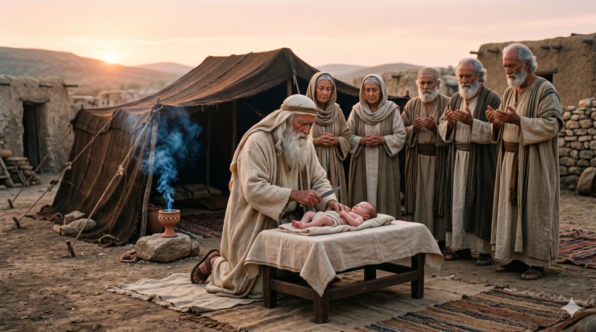

백 세의 아브라함과 구십 세의 사라, 품에 안긴 갓난 이삭을 바라보며 흐르는 감격의 눈물 — 25년의 기다림 끝에 이루어진 약속
여호와께서 말씀하신 대로 사라를 돌보셨고 여호와께서 말씀하신 대로 사라에게 행하셨으므로 사라가 임신하고 하나님이 말씀하신 시기가 이르러 노년의 아브라함에게 아들을 낳으니 … 사라가 이르되 하나님이 나를 웃게 하시니 듣는 자가 다 나와 함께 웃으리로다 — 창세기 21:1–2, 6
아브라함이 하나님의 처음 부르심을 받았을 때 그의 나이는 75세였습니다(창 12:4). 그리고 이삭이 태어난 지금 그는 100세가 되었습니다(창 21:5). 약속을 받은 때부터 성취까지 꼬박 25년. 그 사이에 아브라함은 이집트로 피란을 갔고, 롯과 헤어졌으며, 하갈을 통해 이스마엘을 낳았고, 할례의 언약을 받았고, 그랄에서 또 한 번 실패했습니다. 그토록 긴 세월 속에 그의 믿음은 때로 흔들렸고, 사라는 속으로 웃기까지 했습니다. 그러나 하나님은 "말씀하신 대로" — 이 구절이 본문에서 두 번이나 반복됩니다 — 정확히 그 말씀대로 행하셨습니다. 인간의 달력이 아니라 하나님의 때에, 하나님의 방식으로 약속은 성취되었습니다.
이삭(יִצְחָק, 이츠하크)이라는 이름은 히브리어로 "그가 웃는다"는 뜻입니다. 처음에 아브라함은 불신의 웃음을 웃었고(창 17:17), 사라는 의심의 웃음을 웃었으며(창 18:12), 이스마엘은 조롱의 웃음을 웃게 될 것입니다(창 21:9). 그러나 이제 사라는 경이와 감사의 웃음을 웃습니다. "하나님이 나를 웃게 하시니 듣는 자가 다 나와 함께 웃으리로다." 같은 웃음이지만 완전히 다른 웃음. 하나님의 약속이 성취될 때 우리 삶에도 이런 웃음이 찾아옵니다. 의심이 찬양이 되고, 탄식이 노래가 되는 순간 — 그것이 하나님의 시간입니다.

난지 팔 일 만에 아들에게 할례를 행하는 아브라함 — 기쁨 뒤에 따르는 언약의 순종
당신은 지금 얼마나 오래 기다리고 있습니까? 기도한 지 25년이 지났는데도 응답이 없는 것 같은 제목이 있습니까? 아브라함의 이야기는 당신에게 속삭입니다. "하나님은 잊지 않으셨다. 약속은 늦지 않는다. 다만 인간의 시계가 아닌 하나님의 시계로 움직일 뿐이다." 당신이 포기하고 싶은 바로 그 자리, 더 이상 믿어지지 않는 그 기도 제목에 하나님은 "말씀하신 대로" 행하실 것입니다. 인간의 방법(하갈)을 통해 앞서가지 말고, 하나님의 때를 기다리십시오.
동시에 오늘의 본문은 우리가 기다림의 열매를 받았을 때 어떻게 반응해야 할지를 가르칩니다. 사라는 "하나님이 나를 웃게 하시니"라고 고백했습니다 — 자신의 노력이 아니라 하나님의 손이 하셨음을 인정하는 고백입니다. 당신에게 오래 기도했던 기도 응답이 이루어졌을 때, 그 모든 영광을 하나님께 돌리십시오. 그리고 아브라함처럼 난 지 팔일 만에 할례를 행한 것처럼 순종으로 응답하십시오. 받은 축복에는 언약의 책임이 따릅니다. 이삭이라는 선물 뒤에는 모리아 산의 제단이 기다리고 있었음을 잊지 마십시오.
하나님은 25년이 걸려도 "말씀하신 대로" 행하십니다.
의심의 웃음이 경이의 웃음으로 바뀌는 날이 반드시 옵니다.
포기하지 마십시오 — 당신의 이삭이 오고 있습니다.